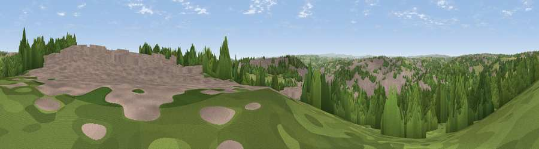

Viewpoint near Batley
#28384 in England · top 51% of its area beats it · near BatleyThe view, rendered

A 360° render of this exact spot computed from the terrain model, tree cover and land cover — summer colours, afternoon light, calibrated against photographs of famous viewpoints. Real trees, hedges and buildings will differ in detail.
The panorama
Grey silhouette: terrain skyline in each direction (720 bearings, Earth curvature and refraction included). Dashed green: skyline with trees (+15 m) and buildings (+8 m) as obstacles. Blue strip: how far the ground is visible on each bearing.
Where the view opens
Wedge length = distance to the farthest visible ground on that bearing (vegetation-aware). Rings at 10, 25 and 50 km.
What fills the view
36% woodland · 35% built-up · 25% grassland · 4% cropland
Angular shares of the visible panorama (visual magnitude), not map area. Landscape diversity 0.52 (0–1 Shannon).
Key numbers
More beautiful places nearby
The staircase of upgrades: each row has a higher view potential than everything closer. Driving times are estimates from straight-line distance, calibrated against real road routing — check an actual route before setting out.
| Place | Direction | Drive | Score |
|---|---|---|---|
| Viewpoint near Woodkirk | NNE · 1 km | ~4 min | 62.1 |
| Viewpoint near Upper Hopton | SW · 8 km | ~17 min | 65.7 |
| Viewpoint near Grange Moor | SSW · 9 km | ~18 min | 69.8 |
| Castle Hill | SW · 15 km | ~26 min | 70.2 |
| Rawdon Billing | NNW · 16 km | ~28 min | 73.0 |
| Viewpoint near Jackson Bridge | SSW · 19 km | ~32 min | 73.5 |
| Viewpoint near Otley | NNW · 21 km | ~35 min | 77.5 |
| Darwen Hill | W · 58 km | ~80 min | 80.7 |
53.71517, -1.61472 · source: screening · position refined by local search. Computed location — check access rights before visiting.